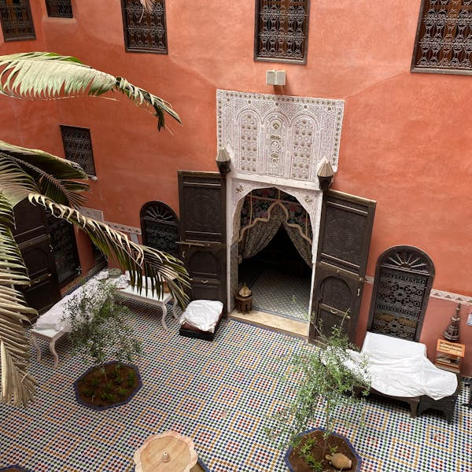
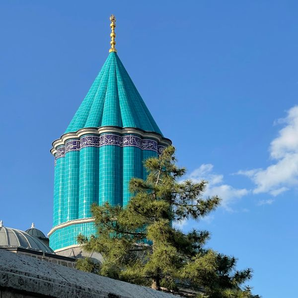
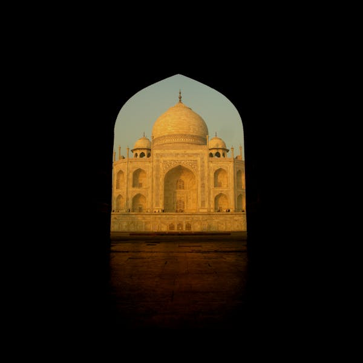
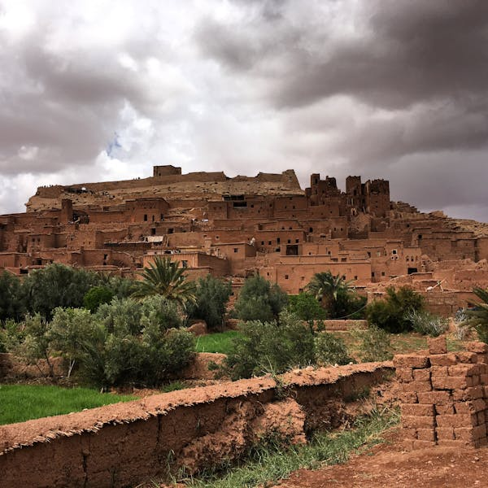
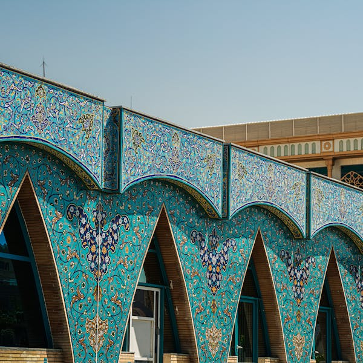
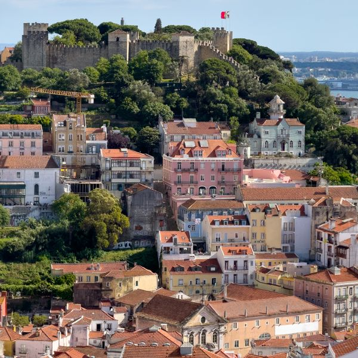
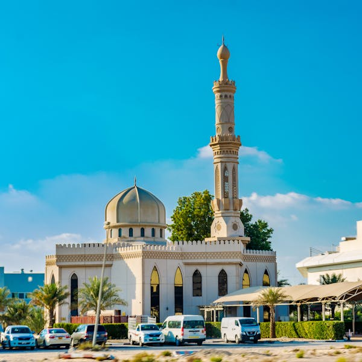
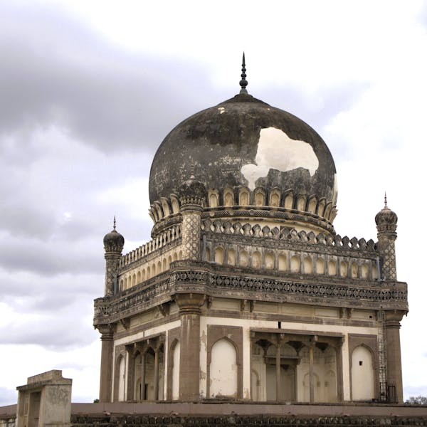

A

an open space inside a building, without a roof
B

a rounded roof on top of a building
C

an entrance or passage under a curved arch
D

a large, strong building built to defend a place
E

a picture made of small pieces of coloured tile or glass
F

a fortress that protects a city, usually on high ground
G

a tall, slim tower of a mosque
H

a grand building containing the tomb of an important person